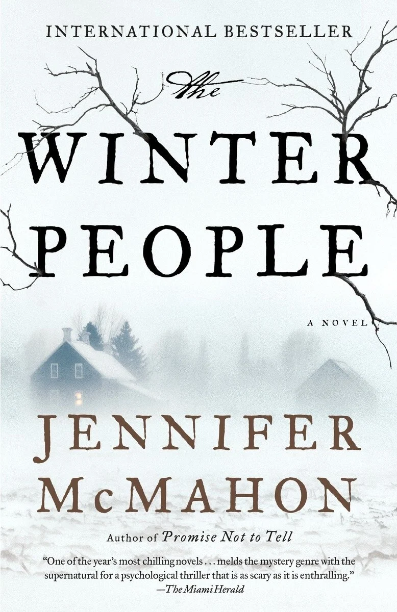

The winter people
Autrice : Jennifer McMahon
Genre: Horreur surnaturelle
Année de publication: 2014
Langue: Anglais et Français (titre VF : Winter people)

Sommaire
Quand elle était enfant, Sara a apperçu, courant dans la forêt, une femme dont elle avait assisté aux funérailles quelques jours auparavant. Sa nourrice, Auntie, lui avait alors appris l’existance des Sleepers : des défuns qu’il est possible de ramener parmi les vivants, avec toutefois certaines règles, car tout a un prix...
Le défunt peu rester « vivant » jusqu’à 7 jours, s’il tue une personne durant cette période, il peut rester parmi les vivants indéfiniment.
Arrivée à l’âge adulte, Sara et son mari vivent à la ferme avec leur fille de 7 ans. Un jour de tempête hivernale, Gertie disparaît.
Taper le sommaire ou la quatrième de couverture.
Critique
Le folklore et les anciennes légendes avaient tout pour me plaire, j’aime particulièrement ce genre d’horreur surnaturelle.
Cependant, l’histoire est très longue à démarrer et contemplative. J’aurais aimé voir un peu plus d’action tout au long du récit.
Taper mon avis
Taper mon avis
Moment favori
Les Sleepers! J’ai bien aimé le concept des entités.
Favoris
Favoris
Moment moins fort
Le rythme était un peu trop lent pour le sujet du livre!
J’aime un bon livre lent, mais quand ça « fit » avec le style.
Faiblesse